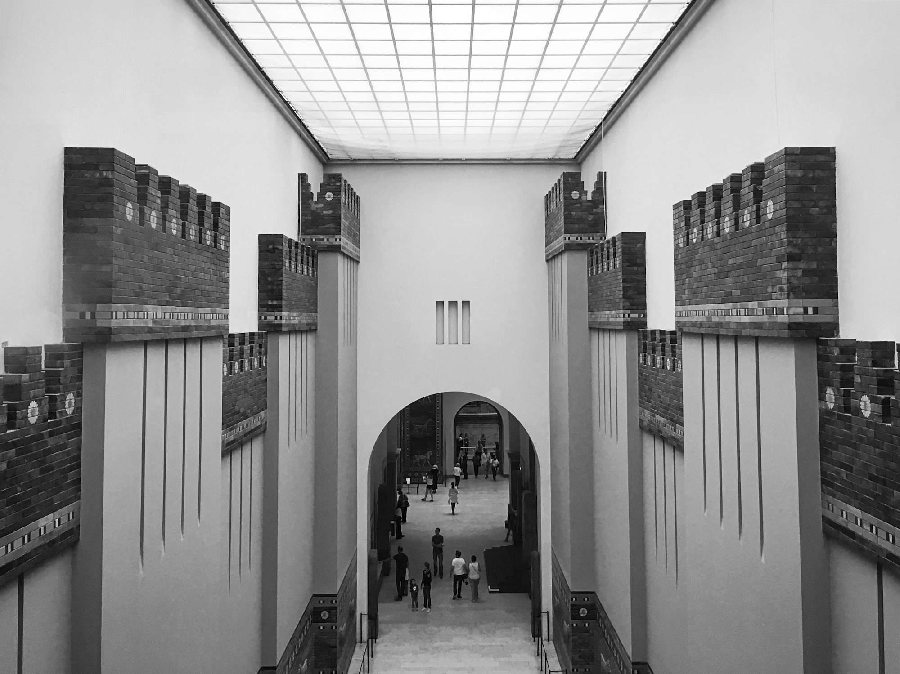
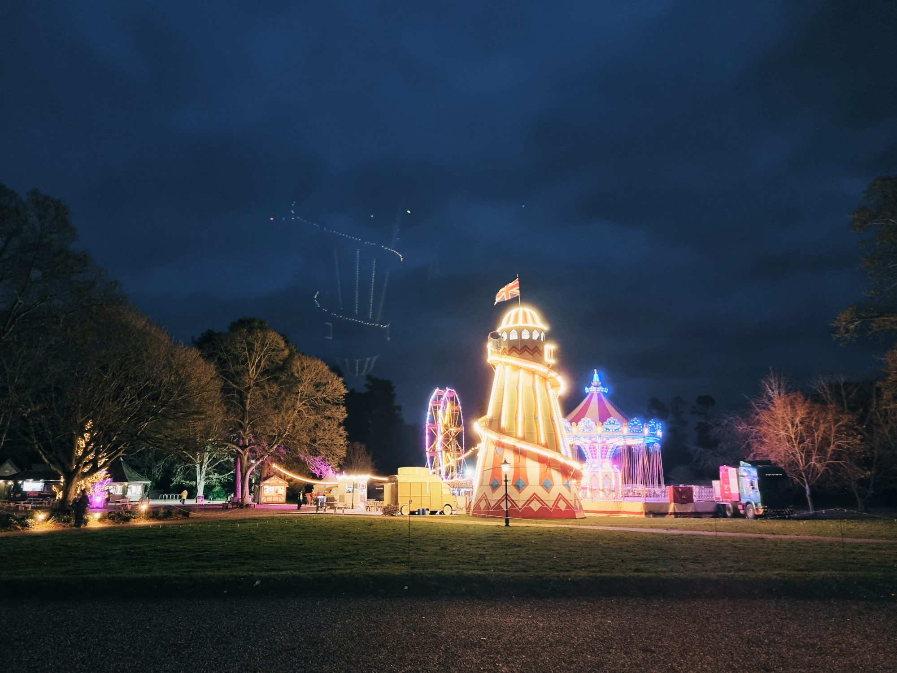
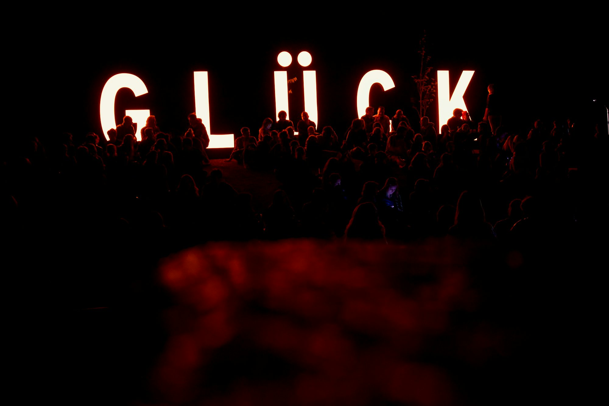

Exploring the Fascinating World of Science Museums
This article delves into the significance of science museums in promoting scientific literacy, providing interactive learning experiences, and inspiring future innovators through engaging exhibits and programs.
Imagery array

Drop Us a Line
Nathaniel Reed
Celebrating Together: Creative Ideas for Family Gatherings
This article offers inspiring ideas and tips for hosting memorable family gatherings, emphasizing connection, fun, and shared experiences.
02 February 2025
Celebrating Life: A Comprehensive Guide to Birthday Parties
This article explores the intricacies of planning the perfect birthday party, covering themes, decorations, food, activities, and memorable experiences.

Exploring the World of Culinary Arts: A Journey Through Flavor
This article delves into the diverse world of culinary arts, exploring various cuisines, techniques, and the cultural significance of food.
07 July 2025
Elena Fischer

Cultural Landscapes: The Role of Museums in Preserving Heritage
This article examines how museums contribute to preserving cultural heritage and the diverse roles they play in educating and engaging communities.


Exploring the Evolution of Museums: From Traditional to Interactive Spaces
This article examines the evolution of museums, highlighting how they have transformed from traditional institutions to dynamic, interactive spaces that engage and inspire diverse audiences.
22 December 2024
Maya Richardson
Embracing Sustainability: The Future of Business Practices
This article explores the importance of sustainability in modern business practices, highlighting strategies companies can adopt to create a positive impact on the environment and society.
24 February 2025
Sophia Martinez

Celebrating Milestones: The Art of Throwing Unforgettable Graduation Parties
Explore essential tips and creative ideas for planning a memorable graduation party that honors achievements and creates lasting memories.